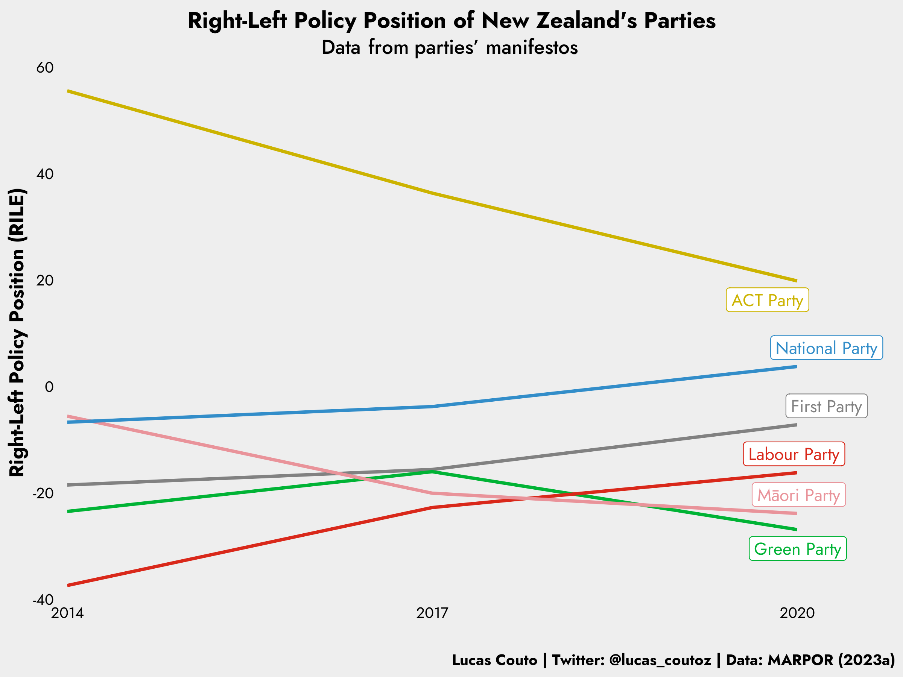

New Zealand Parties Placement on a General right-left Dimension
Data Visualization
Ideology
New Zealand
Manifesto
In this post, we see where New Zealand parties stand on the right-left ideological scale
Author
Lucas Couto
Published
April 24, 2024
Interest in New Zealand
As the title says, this month’s visualisation is all about where New Zealand parties are located on the overarching right-left dimension. But where does my interest stem from? Well, basically, I recently read Bowler, Karp and Donovan (2010)’s work on strategic coalition voting, where they argue that voters cast a ballot in a strategic way, more specifically with a view on what the coalition bargaining process will result in terms of the partisan composition of the government.
That made me realise I know very little about New Zealand’s politics. As a result, I decided to graphically view where the main parties are located on the typical ideological spectrum of right-left in recent elections.
To do so, I rely on the ideological position offered by the Manifesto Research on Political Representation (MARPOR), which consists of retrieving information from party manifestos. Most importantly, I use the rile variable to account for parties’ placement on the right-left dimension.
Carefulness when using data from MARPOR
The use of data from the MARPOR project is not without criticism. For example, Mikhaylov, Laver and Benoit (2012) warn that some individual categories derived from the process’ coding process are highly unreliable. This is most perniciously for our current purposes, as the variable we rely on consists exactly of a sum of several categories 🥶.
To circumvent this problem and ascertain the validity of the visualisation below, I should, in an ideal world, contrast the information I get from MARPOR’s data with the information from another source to ensure the parties’ policy positions are similar in the two measures. As my interest in this post is centred mainly on data visualisation, I focus only on the measure provided by the MARPOR. Be aware, then, that the figure below might not be the best representation of New Zealand’s political landscape.
The Ideological Positions of New Zealand Parties
Below, the right-left dimension is on the y-axis. Higher values indicate more right-wing policy positions and lower values indicate more left-wing inclination. Upon retrieving right-left placements of New Zealand parties from their manifestos, the figure tells us that the most right-wing party is the ACT Party. Of note, though, is that its policy position in the 2020 manifesto is substantially less extremist than its correspondent in 2017. Perhaps, this results from the party trying to present itself as a possible coalitional partner.
Equally interesting is the traditional right-wing party, the National Party, moving increasingly rightward throughout the last three elections. Of course, this analysis is restricted to only one single overarching dimension, but I still wonder whether the mainstream right party and the radical right are becoming increasingly similar to each other. Crucially, moreover, how does the public perceive such differences? This becomes even more interesting when recent empirical research tells us that public perceptions about coalition parties are not oblivious to the cooperation between mainstream and radical parties.
My last remark is that it is interesting that the Labour Party has slowly but continuously moved its manifesto rightward. Would that be a conscious strategy to deal with the rise of the right in the country? Or would that be only due to data artefact, namely the sum of different individual categories?

Right-Left Placements of New Zealand Parties
Well, it’s been fun superficially exploring the spatial placement of political parties in New Zealand. Who knows I’ll continue down this path in the next few months?
Code
Show the code
##before you proceed, you should download the data from: https://manifesto-project.wzb.eu/datasets#Load packageslibrary(ggrepel)library(ggtext)library(lubridate)library(ragg)library(showtext)library("tidylog", warn.conflicts =FALSE)library(tidyverse)#load datamarpor <-read_csv("MPDataset_MPDS2023a.csv")#data wranglingNZ_parties <- marpor %>%filter(countryname =="New Zealand") %>%select(partyname, pervote, edate, rile, ) %>%mutate(all =dmy(edate),year =year(all)) %>%filter(year >=2014) %>%mutate(partyname =case_when(partyname =="Green Party of Aotearoa New Zealand"~"Green Party", partyname =="ACT New Zealand"~"ACT Party", partyname =="New Zealand Labour Party"~"Labour Party", partyname =="New Zealand First Party"~"First Party", partyname =="New Zealand National Party"~"National Party", T ~as.character(partyname))) %>%mutate(PN =ifelse(year ==2020, partyname, NA))#Colourparties <-c("Green Party"="#00b335","ACT Party"="#ccb300","Māori Party"="#e9939a","Labour Party"="#d9281a","First Party"="#818181","National Party"="#328dc9")#themesfont_add(family ="regular", "Jost-Regular.ttf")font_add(family ="bold", "Jost-Bold.ttf")font_add(family ="medium", "Jost-Medium.ttf")showtext_auto() #plotNZ_parties %>%ggplot(aes(year, rile, colour = partyname, group = partyname, label = PN)) +geom_line(stat ="identity", linewidth =1) +geom_label_repel(fill ="white", xlim =c(-Inf, Inf), ylim =c(-Inf, Inf+0.05), family ="regular", size =12) +scale_colour_manual(values = parties) +scale_x_continuous(limits =c(2013.95, 2020.8),breaks =c(2014, 2017, 2020)) +scale_y_continuous(limits =c(-40, 60),breaks =seq(-40, 60, by =20))+coord_cartesian(expand=FALSE) +xlab("") +ylab("Right-Left Policy Position (RILE)") +labs(title ="Right-Left Policy Position of New Zealand's Parties",subtitle ="Data from parties' manifestos",caption ="Lucas Couto | Twitter: @lucas_coutoz | Data: MARPOR (2023a)") +theme(#Title, Subtitle, Captionplot.title =element_text(family ="bold", hjust =0.5, vjust =0.5, size =45, color ="black"),plot.title.position ="plot",plot.subtitle =element_markdown(family="medium", size =40, hjust =0.5, color ="black"),plot.caption =element_text(family="bold", size =30, color ="black", hjust =1),plot.caption.position ="plot",#Panel and Backgroundpanel.border =element_blank(),panel.grid.major =element_blank(),panel.grid.minor =element_blank(),panel.background =element_rect(fill ="#EEEEEE"),plot.background =element_rect(fill ="#EEEEEE", linetype ='blank'),#Axesaxis.title =element_text(size =40, family ="bold", color ="black"),axis.text.y =element_text(size =30, family ="regular", color ="black"),axis.text.x =element_text(size =30, family ="regular", color ="black"),axis.ticks =element_blank(),axis.line =element_blank(),#no legendlegend.position ="none",text =element_text(size =30)) -> beef#ggsave("NZ.png",# plot=beef,# device = agg_png(width = 8, height = 6, units = "in", res = 300))